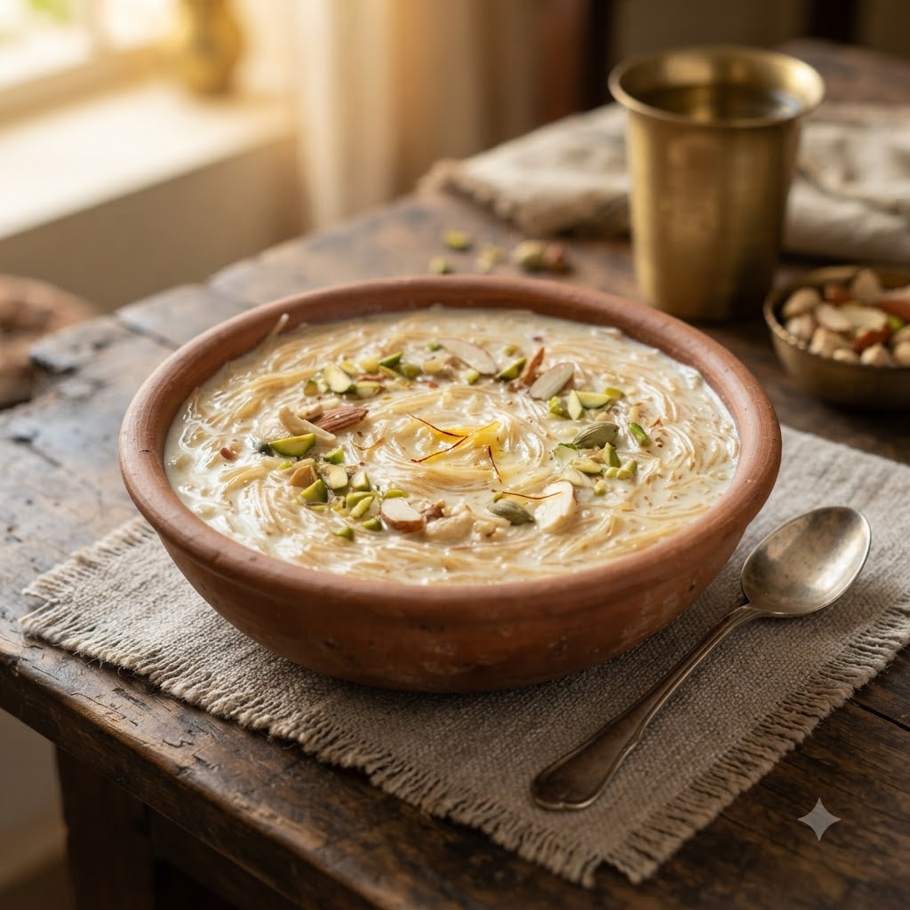

Semiya (Vermicelli) Kheer

Semiya (Vermicelli) Kheer
Chef Magic – Sauté + Boil Auto 22 min — Serves 4
🧑🍳 Chef Magic🍽 Serves 4
Ingredients
- 1 cup vermicelli
- 3 cups milk
- 3 tbsp sugar
- 1 tbsp ghee
- 10 cashews & raisins
- 1/4 tsp cardamom powder (elaichi powder)
Method
1Add ghee, cashews and raisins to the jar; select Sauté (Speed 2–4, ~130–160°C) until golden.
2Add vermicelli and sauté 2 minutes until lightly toasted.
3Pour in milk and sugar; select Boil (Speed 1–2, 100°C) and cook, stirring occasionally, until thickened.
4Stir in cardamom powder and serve warm or chilled.